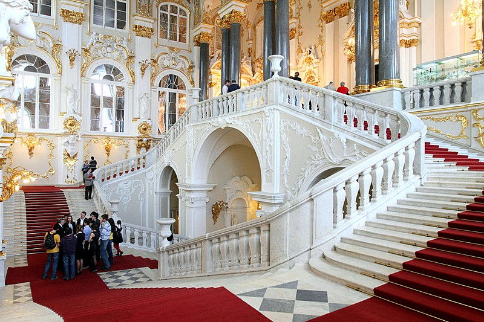
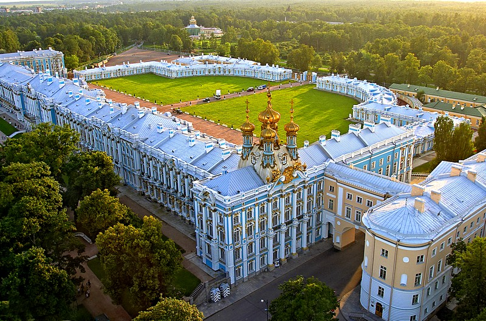
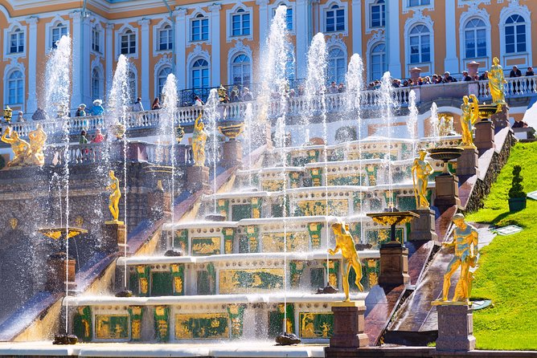
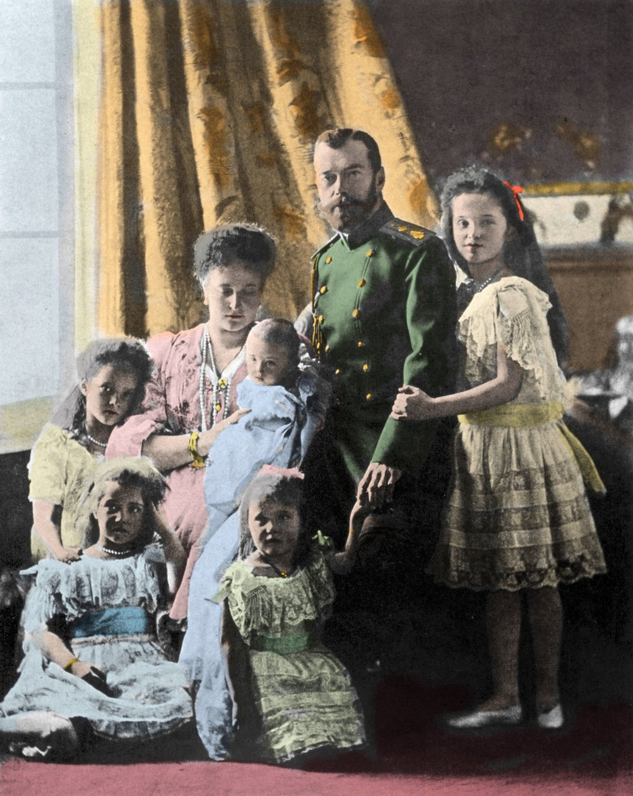

Russia's Imperial Dynasty
Over 300 Years of Power and Influence (1613-1917)
The Romanovs rose to prominence when Anastasia Romanovna married Ivan the Terrible, the first crowned tsar of Russia. After the Rurik dynasty ended in 1598, the Time of Troubles ensued. In 1613, the Zemsky Sobor elected 16-year-old Michael Romanov as tsar, establishing the dynasty that would rule Russia for over 300 years.
Under rulers like Peter the Great and Catherine the Great, the Romanovs transformed Russia into a major European power. Peter proclaimed the Russian Empire in 1721, while Catherine expanded Russian territory significantly through military campaigns and diplomatic maneuvering, establishing Russia as a dominant force in European politics.
The 19th century saw Russia flourish culturally and artistically. The Romanovs patronized literature, music, and architecture. Great writers like Tolstoy and Dostoevsky emerged during this era, while magnificent palaces were constructed. The dynasty became synonymous with Russian imperial grandeur and cultural achievement.
The Russian Revolution of 1917 ended Romanov rule. Nicholas II abdicated in March 1917, and he and his family were executed in 1918. Though their direct rule ended, the Romanovs left an indelible mark on Russian and European history, with their palaces and cultural contributions remaining influential today.
Founder of the Dynasty
Michael Romanov was elected tsar at age 16 by the Zemsky Sobor in 1613, establishing the Romanov dynasty. He brought stability after the chaotic Time of Troubles and established the foundations for Russia's future greatness. His reign marked the beginning of over 300 years of Romanov rule.
Transformer of Russia
Peter I was one of Russia's greatest rulers. He transformed Russia into a major European power through military victories and sweeping reforms. Peter proclaimed the Russian Empire in 1721 and was the first to take the title of Emperor. He modernized Russian society, culture, and military, establishing St. Petersburg as the new capital.
Enlightened Empress
Catherine II was a German princess who became one of Russia's greatest rulers. She reigned for 34 years and expanded Russian territory significantly. Catherine was an enlightened absolutist who promoted education, culture, and the arts. She corresponded with Voltaire and other Enlightenment thinkers, earning her the title "the Great."
Conqueror of Napoleon
Alexander I ruled during the Napoleonic Wars and led Russia to victory against Napoleon. He expanded Russian influence across Europe and was instrumental in forming the Holy Alliance. His reign saw Russia emerge as a major European power with significant political influence on the continent.
The Tsar Liberator
Alexander II is known as the "Tsar Liberator" for emancipating the serfs in 1861, one of the most significant reforms in Russian history. He implemented numerous other reforms including judicial reform, military reform, and educational reform. His reign saw significant social and political changes in Russia.
Last Russian Emperor
Nicholas II was the last emperor of Russia. He ruled during a period of revolutionary ferment and was unable to adapt to changing times. He abdicated in March 1917 following the February Revolution. Nicholas II and his entire family were executed in 1918, ending the Romanov dynasty's direct rule over Russia.

St. Petersburg, Russia
The Winter Palace was the official residence of the Russian emperors from 1732 until 1917. This magnificent baroque palace is one of the most iconic buildings in Russia. Today, it houses the Hermitage Museum, one of the world's greatest art museums. The palace features elaborate interiors with hundreds of rooms decorated in various styles.

Tsarskoe Selo, St. Petersburg
Catherine Palace is a stunning rococo palace built for Catherine I. Located in Tsarskoe Selo (Tsar's Village), it served as a summer residence for the imperial family. The palace is famous for its ornate decoration, including the legendary Amber Room. The gardens surrounding the palace are equally magnificent, featuring fountains, sculptures, and landscaped grounds.

Peterhof, near St. Petersburg
Peterhof Palace is often called the "Russian Versailles" due to its grandeur and extensive gardens. Built by Peter the Great as a summer residence, it features stunning baroque architecture and is famous for its elaborate fountain system. The palace complex includes numerous buildings and is surrounded by beautiful parks with hundreds of fountains and sculptures.
Tsarskoe Selo, St. Petersburg
The Alexander Palace served as the final imperial residence of the Romanov family. Built in the neoclassical style, it was the favorite residence of Nicholas II and his family. The palace is more intimate than the grand state palaces, reflecting the personal tastes of the imperial family. It remains a significant historical site today.
St. Petersburg, Russia
The Anichkov Palace is one of the oldest buildings in St. Petersburg. Built in the 18th century, it served as a residence for various members of the imperial family. The palace features elegant neoclassical architecture and is known for its beautiful interiors and art collections. Today, it serves as a cultural institution.
Livadia, Crimea
Livadia Palace was the summer residence of the Russian imperial family in Crimea. Built in the neoclassical style, it features elegant white stone architecture and beautiful gardens overlooking the Black Sea. The palace is historically significant as the site of the Yalta Conference during World War II, where major decisions about post-war Europe were made.
Anastasia Romanovna marries Ivan IV, the first crowned tsar of Russia. This marriage elevates the Romanov family to prominence in Russian politics and society.
Fyodor I dies without an heir, ending the 700-year-old Rurik dynasty. This leads to the Time of Troubles, a period of political chaos and succession disputes.
The Zemsky Sobor elects 16-year-old Michael Romanov as tsar, establishing the Romanov dynasty. This marks the beginning of over 300 years of Romanov rule over Russia.
Peter I proclaims the Russian Empire and takes the title of Emperor. Russia is now officially recognized as an empire and a major European power.
Catherine II, a German princess, becomes Empress of Russia. She will rule for 34 years and expand Russian territory significantly, earning the title "the Great."
Under Alexander I, Russia defeats Napoleon's invasion. This victory establishes Russia as a major European power and increases its influence on the continent.
Alexander II emancipates the serfs, freeing millions of enslaved peasants. This is one of the most significant reforms in Russian history and transforms Russian society.
The February Revolution forces Nicholas II to abdicate. The Romanov dynasty's 304-year rule over Russia comes to an end, leading to the establishment of the Soviet Union.

Tsar Nicholas II with his family, circa 1904-1905
Nicholas II was the last Emperor of Russia. He married Alexandra Feodorovna, a German princess, and they had five children: four daughters (Olga, Tatiana, Maria, and Anastasia) and one son (Alexei). The family was close-knit and devoted to each other, but Nicholas struggled to adapt to the changing political landscape of early 20th century Russia.
The imperial family faced numerous challenges during Nicholas II's reign, including military defeats, economic hardship, and revolutionary ferment. The family's association with Grigori Rasputin, a controversial mystic who claimed to help the young Alexei's hemophilia, further damaged their reputation.
Following the February Revolution of 1917, Nicholas II abdicated the throne. The family was placed under house arrest and eventually executed by Bolshevik forces in 1918. Their tragic end marked the conclusion of the Romanov dynasty's rule over Russia.
The House of Romanov ruled Russia for over 300 years, from 1613 to 1917. During this period, they transformed Russia from a regional power into one of Europe's greatest empires. The Romanovs shaped Russian politics, culture, and society in profound ways that continue to influence Russia today.
The dynasty produced some of history's most significant rulers, including Peter the Great, who modernized Russia and established it as a major European power, and Catherine the Great, who expanded Russian territory and promoted enlightenment ideals. Under Romanov rule, Russia became a cultural powerhouse, producing great literature, music, and art.
The Romanovs built magnificent palaces that remain among the world's most beautiful buildings. The Winter Palace, now the Hermitage Museum, houses one of the world's greatest art collections. Peterhof Palace, with its elaborate fountains and gardens, is often called the "Russian Versailles." These palaces stand as monuments to the grandeur and sophistication of the Romanov era.